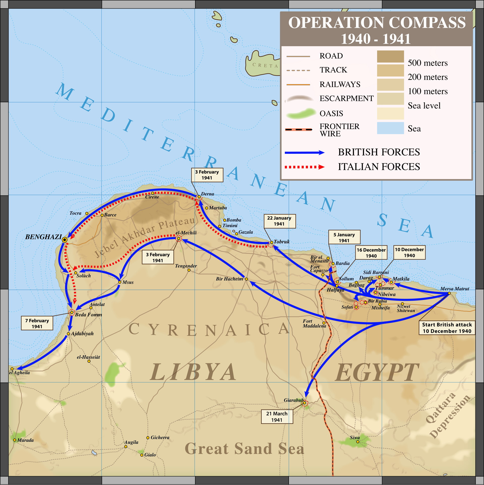

Operación Compass
La primera gran ofensiva británica de la guerra en el Norte de África, que destruyó al 10.º Ejército italiano y estuvo a punto de expulsar a Italia de Libia.
Datos
| Fechas | 8 de diciembre de 1940 – 9 de febrero de 1941 |
|---|---|
| Lugar | Egipto occidental y Cirenaica (Libia) |
| Resultado | Victoria británica decisiva; destrucción del 10.º Ejército italiano |
| Bando aliado | Reino Unido y la Commonwealth (Fuerza del Desierto Occidental) |
| Bando del Eje | Italia |
| Comandantes | Richard O'Connor, Archibald Wavell (Reino Unido); Rodolfo Graziani (Italia) |
| Consecuencia directa | Alemania envía el Afrika Korps de Rommel para rescatar a Italia |
Bandos
y Commonwealth
10.º Ejército
Introducción
En septiembre de 1940, la Italia de Mussolini, deseosa de construir un imperio en el Mediterráneo, invadió Egipto —bajo control británico— desde su colonia de Libia, pero se detuvo tras avanzar poco. En diciembre, los británicos, muy inferiores en número, lanzaron lo que iba a ser una incursión de cinco días, la Operación Compass. El éxito fue tan arrollador que se convirtió en una ofensiva total.
Razones
- Defender Egipto y el Canal de Suez: una arteria vital para el Imperio británico y sus comunicaciones con la India y el petróleo de Oriente Medio.
- Aprovechar la debilidad italiana: el ejército italiano en Libia estaba mal equipado, disperso en campamentos fortificados y con la moral baja.
- Golpear primero: desbaratar la invasión italiana de Egipto antes de que se reforzara.
Cuerpo (desarrollo)
Las tropas británicas, australianas e indias, apoyadas por los pesados tanques Matilda —casi invulnerables a los cañones italianos—, se infiltraron entre los campamentos fortificados italianos y los fueron tomando uno a uno. El avance fue imparable: cayeron Sidi Barrani, Bardía, Tobruk y Bengasi.
La persecución culminó en la batalla de Beda Fomm (febrero de 1941), donde una pequeña fuerza británica cortó la retirada de todo el ejército italiano y lo obligó a rendirse. En dos meses, los británicos avanzaron unos 800 km, destruyeron el 10.º Ejército italiano e hicieron unos 130.000 prisioneros, con pérdidas propias mínimas.

Mapa de la Operación Compass (Wikimedia Commons): el avance por la costa libia hasta Beda Fomm. Leyenda original en inglés.
Conclusión
Compass fue una de las victorias más completas del comienzo de la guerra y humilló al ejército italiano. Sin embargo, no llegó a expulsar del todo a Italia: los británicos tuvieron que desviar tropas a Grecia, y la llegada del Afrika Korps alemán, al mando de Erwin Rommel, cambiaría por completo el signo de la guerra en el desierto.
- Demostró la debilidad militar italiana y la dependencia del Eje respecto de Alemania.
- Provocó la intervención alemana en el Norte de África, que prolongaría la campaña dos años más.
- Elevó la moral británica en un momento en que el Reino Unido combatía prácticamente solo.
Curiosidades
- Una incursión que se descontroló: Compass se planeó como una operación limitada de cinco días; el hundimiento italiano la convirtió en una ofensiva de dos meses.
- Los tanques Matilda: su gruesa coraza los hacía casi inmunes a la artillería italiana, lo que les valió un papel decisivo.
- Más prisioneros que atacantes: los británicos capturaron a tantos soldados italianos que a veces superaban en número a sus propios captores.
Teorías
Debates e interpretaciones historiográficas, presentados como tales:
- ¿Se desaprovechó la victoria? Se debate si el desvío de tropas británicas a Grecia impidió rematar la conquista de Libia antes de la llegada de Rommel.
- El coste del éxito rápido: algunos historiadores señalan que la extraordinaria velocidad del avance dejó a las fuerzas británicas dispersas y agotadas, facilitando el posterior contraataque del Eje.